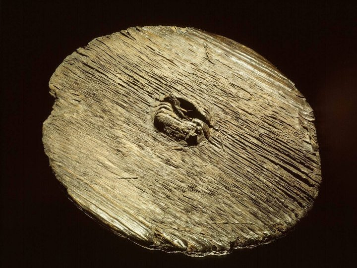

3.1 Het houten wiel van Steenwijk

Het houten wiel van Steenwijk. Dit houten wiel is gevonden bij landgoed De Eese, bij Steenwijk. Het dateert uit het late neolithicum, rond 2600 voor Christus. Het is een groot, schijfvormig wiel van hout, met een verdikte naaf waar de as doorheen liep. Wielen maakten vervoer met karren mogelijk. Dat was een belangrijke vernieuwing in de prehistorie. Toch zijn veel wielen uit het veen nooit gebruikt. Sommige waren zelfs niet helemaal afgemaakt. Ook dit wiel lag in het moeras en vertoont geen duidelijke gebruikssporen. Daarom denken archeologen dat het bewust is achtergelaten. Mogelijk was het een offer op een plek die als heilig werd gezien.